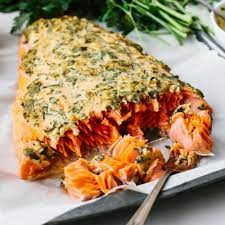

Baked Dijon Salmon

Description
This mustard-crusted salmon is a wonderful way to prepare fresh salmon fillets in the oven.
Be sure to make extra — your family will be begging for more!
Ingredients:
- ¼ cup butter, melted
- 3 tablespoons Dijon mustard
- 1 ½ tablespoons honey
- ¼ cup dry bread crumbs
- ¼ cup finely chopped pecans
- 4 teaspoons chopped fresh parsley
- 4 (4 ounce) fillets salmon
- salt and pepper to taste
- 1 lemon, for garnish
Steps:
-
Preheat the oven to 400 degrees F (200 degrees C).
-
Stir together butter, mustard, and honey in a small bowl. Set aside.
Mix together bread crumbs, pecans, and parsley in another bowl.
-
Brush each salmon fillet lightly with honey mustard mixture,
and sprinkle the tops of fillets with bread crumb mixture.
-
Bake salmon in the preheated oven until it flakes easily with a fork, 12 to 15 minutes.
Season with salt and pepper, and garnish with a wedge of lemon.